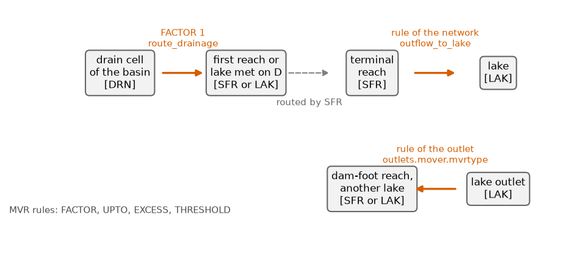

Streams and the water mover#
A stream network (SFR) routes the water it receives from reach to reach and exchanges water with the aquifer through its bed. The water mover (MVR) hands the outflow of one package to another: a drain to a reach, a reach to a lake, a lake to a reach. Both need MODFLOW 6. The keys of a network are in [flow.sinks_sources.sfr].
Notation of this page
Symbol |
Meaning |
Unit |
Set by |
|---|---|---|---|
\(z_\mathrm{top}\) |
model top, the land surface |
m |
|
\(z^\mathrm{rtp}_j\) |
top of the bed of reach \(j\) |
m |
derived, inside its cell |
\(K_b, b_s\) |
conductivity and thickness of a streambed |
m/s, m |
|
\(n_M\) |
Manning roughness of a reach |
s/m^(1/3) |
|
\(S_\mathrm{min}\) |
floor of the gradient of a reach |
||
\(\beta_\mathrm{inc}\) |
depth a bed is cut below the ground of its cell |
m |
What a reach is#
An SFR network is a set of reaches. Each reach \(j\) has a length \(L_j\), a width \(w_j\), a gradient \(S_j\), a bed top \(z^{\mathrm{rtp}}_j\), a bed thickness \(b_s\), a bed conductivity \(K_b\) and a Manning roughness \(n_M\). It exchanges water with the aquifer cell under it, and passes its flow to the reach below.
The reaches are the cells that the generated stream network crosses, cut by the
mesh, or the rows of an explicit table of reaches. An observed network never
becomes a reach. With
rectify_on_mesh, the cells
of the generated network are the seeds of a single-flow-direction channel
re-derived on the descent \(D\) (Routing on the mesh: the descent D): from every seed, the
receivers of \(D\) are followed one cell at a time until the trace reaches a lake,
a fixed-head cell or a channel cell already traced. The result is one cell wide,
continuous on \(D\), follows the thalweg of \(D\), and ends at a real sink. Short
parallel stubs beside a longer channel are demoted to hillslope drainage. Each
cell keeps the width, the stream order and the bed properties of the seed whose
trace reached it. The gradient is \(S_j = \max(S_j^{\mathrm{delineated}}, S_\mathrm{min})\).
In the code: rectify_reach_graph.
The bed#
The beds of a network are placed by one solve, in two passes. The cell is the hard constraint and the downhill order the soft one. Each reach has a box from its own cell:
where \(z^{\mathrm{top}}_j\) and \(z^{\mathrm{bot}}_j\) are the top and the bottom of
the reach cell, and \(\beta_\mathrm{inc}\) is zero when the incision is not set. A
bed never sits above the ground of its own cell. When the incision is set, the
bed may also not sink more than
max_bed_sag below the upper
bound. An empty box stops the build and names the reach. Inside the boxes the bed
descends downstream by at least \(S_\mathrm{min}\) times the mean length of two
neighbouring reaches. Where a traced channel climbs and the box and the order
cannot both hold, the box wins and the build logs the worst step, so a defect of
the trace cannot drag a bed far below the ground of its cell.
In the code: solve_reach_bed_profile.
Flow and exchange#
The flow balance of a reach, the exchange through the streambed and the stage from Manning’s equation for a rectangular section are the MODFLOW 6 SFR package [Langevin et al., 2017] (chapter 7; input guide: SFR). HydroModPy fills it as follows.
The exchange goes through the streambed with a conductance of \(K_b / b_s\) times the wetted area of the bed, built from
streambed_kandstreambed_thickness. The stage usesmanningand the gradient floored bymin_slope.With
connected_to_aquiferoff, the network is pure routing and has no exchange with the aquifer.The inflow of the headwater reaches is split by drainage area. The catchment runoff of the period (Rain and evaporation: the forcing) is distributed over all the reaches by length. Rain and evaporation are rates, the same on every reach, applied by MODFLOW 6 to the reach area.
A cell that hosts a connected reach loses its drain row: its baseflow goes into the stream through the bed, not out of the model through a drain. The drain rows of the cells around stay, and
route_drainagesends their outflow to the stream (below).
The numerical choice#
MODFLOW 6 can skip the extra Picard iterations of SFR when the reaches are
numbered from upstream to downstream. HydroModPy numbers them that way and sets
the maximum to 1, except when route_drainage is on. The mover then feeds the
reaches, and that exchange belongs to the nonlinear coupling, not to the routing
order: one pass per outer iteration would let the inflow creep while the head has
settled.
In the code: build_sfr_package_args.
The water mover#
The MVR package takes water from a provider, a feature of one package, and gives it to a receiver, a feature of another, by a rule (FACTOR, UPTO, EXCESS or THRESHOLD) [Morway et al., 2021]; input guide: MVR. HydroModPy writes records for three connections, and writes MVR last, after every package it names.
Provider |
Receiver |
Rule |
Set by |
|---|---|---|---|
a drain cell of the basin |
the first reach or lake met on \(D\) |
FACTOR, value 1 |
|
a terminal reach |
a lake |
the rule of the network |
|
a lake outlet |
another lake, a reach, or the reach at the foot of the dam |
the rule of the outlet |

Fig. 55 The three connections of the mover. The orange arrows are MVR records, with their rule and the key that sets them. The dashed arrow is the routing of SFR itself.#
Routing the hillslope drainage#
With route_drainage, every drain cell in the basin of \(D\) hands its whole
outflow to the water body it would physically reach. The walk starts at the
drain cell and follows the receivers of \(D\), the version that stops on a
fixed-head cell. It ends at the first connected reach cell or lake cell. A cell
whose chain leaves the model first keeps a plain drain, and so does a cell outside
the basin.
The basin is the set of cells whose chain passes through the catchment outlet. The outlet follows the rule of the stream criterion: the most drained cell near the outlet the catchment was closed on, else inside the catchment polygon, else the largest basin of the domain.
On a quad mesh \(D\) steps along diagonals, and a chain can cross a reach between two cells that only touch at a corner. When both cells beside a diagonal step are reach cells, the walk ends on the lower of the two.
The provider of a record is the position of the drain in the list of its period.
The drain must therefore be static, with a single period of data: a series of
conductances would renumber the providers and send the water to the wrong place,
and the build refuses it. The budget stores the part the mover took as its own
record, drain_to_mover.
In the code: build_drainage_mover_records.
Assumptions#
A reach is one cell wide, has one downstream reach (or the declared bifurcation), and has a rectangular section.
The bed of a reach and its cell are one: the reach exchanges with the cell under it.
Water routed by the mover reaches its receiver in the same period.
Limits#
SFR and MVR need MODFLOW 6. The check stops a file that lists
"sfr"and names another solver.One SFR network per model. A second one stops the build.
A bed near the water table toggles. MODFLOW 6 switches a reach between connected and disconnected at \(z^{\mathrm{rtp}}_j - b_s\). A bed placed near the depth the water table reaches in a season can change state at every outer iteration and stall the solve. The box of (38) keeps every bed inside its cell for this reason.
No overland flow beyond SFR and the mover. The runoff reaches the streams as a forcing, not through the ground.
Parameters of this page#
Checked by#
The tests that import the code of this page. The box is generated: a new test appears here on the next build.
8 test files import hydromodpy.solver.modflow6.builders.sfr, hydromodpy.solver.modflow6.builders.mvr. Their names say what they check.
unit: 8
- The sfr reach table stores who drains into whom. results
- Modflow6 sfr builder. solver
- Modflow6 sfr mvr coupling. solver
- Modflow6 sfr no lake imports. solver
- Sfr drainage follows the descent. solver
- Sfr picard follows the mover. solver
- Sfr rtp clamp order. solver
- The build hands the descent to the networks. solver
In the code#
What |
Where |
|---|---|
The network, the package, the mover records of a network |
|
The bed |
|
The channel on \(D\) |
|
Hillslope drainage to the streams |
|
The mover records |
|